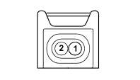

N073A LGP ELECTRIC INJECTOR (FRONT)
- Path
- Electrical equipment > 3 CONNECTORS > N ELECTRIC MOTORS AND ACTUATORS > N073 LGP ELECTRIC INJECTOR > N073A LGP ELECTRIC INJECTOR (FRONT)
- Kind
- connector pinout (pin -> wire colour -> other end)
- Applies to
- engines: 2.0 16V; all production periods; only with equipment: GPL
- Interactive page
- https://sloeber94.github.io/elrnDB-fDct/en/#/244003625
Applies to: engines: 2.0 16V; all production periods; only with equipment: GPL

Wiring | Colour |
|---|---|
NERO (black) |
Pin | Cable | Destination | |||
|---|---|---|---|---|---|
Sec.. | Colour | Node | Connect. | Pin | |
1 | 0,75 | RN (red with black stripe) | 64 | ||
2 | 0,75 | HN (grey with black stripe) | X | 80 | |
2 | |||||
2 | |||||
66 | |||||
2 | |||||
59 | |||||
87 | |||||
C3 | |||||
Topics linked from this page (7)
- 12 FRONT
- D188 ENGINE/LPG JUNCTION
- J026 LPG SUPPLY REMOTE CONTROL
- M018A LGP UNIT (FRONT)
- N073B LGP ELECTRIC INJECTOR (FRONT)
- N073C LGP ELECTRIC INJECTOR (FRONT)
- N073D LGP ELECTRIC INJECTOR (FRONT)